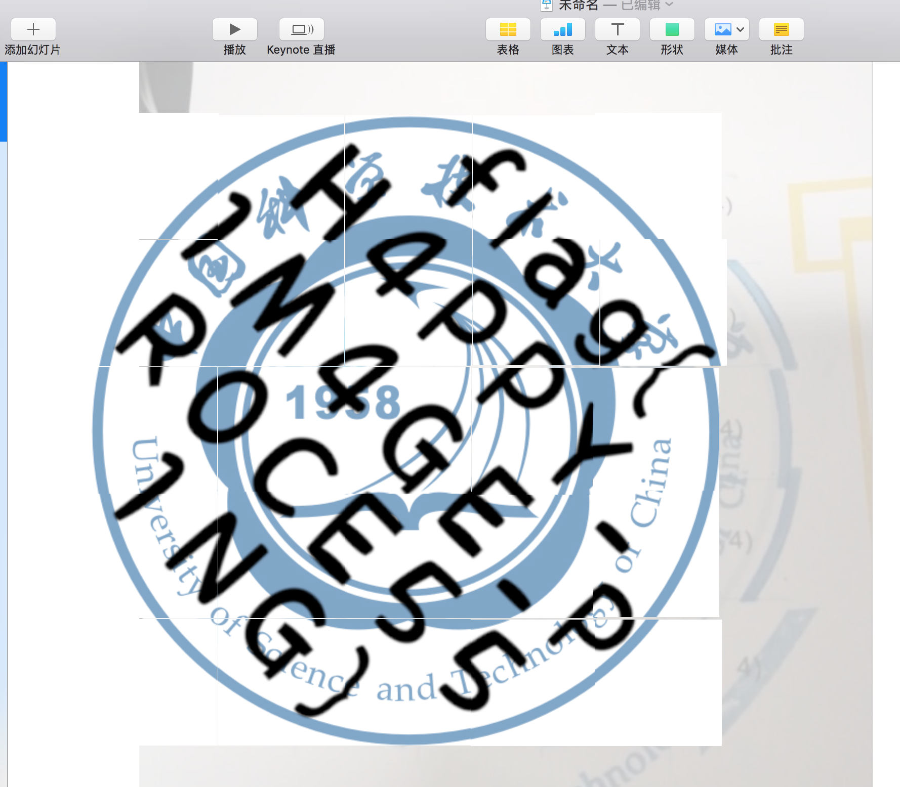

USTC Hackergame 2018 Writeup

被室友拉来打 CTF ，感觉还挺好玩的。最后是停留在了2400分，总排名81名，第一次打，已经满足了。
签到题
查看源码发现有个 maxlength 属性，修改一下就能提交了。
flag{Hackergame2018_Have_Fun!}
猫咪问答
其实这就是道搜索的题目，第一题第五题就是直接百度的题目。第四题········、去中科大的图书网搜索即可。第二题可以通过谷歌搜索 1992年中科大研究生名单，发现有个百度文库的中科大数学系名单，可以查看到92年数学系的学号，通过简单修改就可以得到需要的学号。第三题直接用 python 写了个爆破脚本。
flag{Hackergame2018_Have_Fun!}
游园会的集章卡片
拼图找 flag ，我是直接在 keynote 里拼的，很快。

flag{H4PPY_1M4GE_PR0CE551NG}
猫咪和键盘
使用vim进行多列选择剪切。这里有个 trick 是他使用了 ZJU Lambda nicekingwei的代码，在开头url里藏了base64的地址，可以复制他的代码，在main函数里简单几行修改就可以了。
flag{FfQ47if9Zxw9jXE68VtGAJDk6Y6Xc88UrUtpK3iF8p7BMs4y2gzdG8Ao2gv6aiJ125typed_printf95}
Word 文档
想了半天的题，因为是第一次，没有意识，后来查资料才想起来， docx 文件其实是个 zip 文件，通过改后缀名解压缩即可得到 flag 。
flag{xlsx,pptx,docx_are_just_zip_files}
猫咪银行
一开始没想到，其实就是个整数溢出的问题。买入 222222222222222222222222222222222 分钟，1个份额即可。
flag{Evil_Integer._Evil_Overflow.}
黑曜石浏览器
很容易想到是在 User-Agent 这边做文章，一开始以为直接把头写成 HEICORE 就行，但结果失败了。通过搜索 HEICORE ，发现了 heicore.com 。这个网站很会玩，不能右击，不能F12。所以只能通过 curl 来获取源码。通过审查源码发现 UA 是藏在 js 代码里的，使用 python 构造请求获得 flag。
import requests
r = requests.get('http://202.38.95.46:12001/', headers={'User-Agent':'"Mozilla/5.0 (Windows NT 6.1; WOW64) AppleWebKit/537.36 (KHTML, like Gecko) HEICORE/49.1.2623.213 Safari/537.36'})
print r.content
flag{H3ic0re_49.1.2623.213_sai_kou}
回到过去
简单看一下manual，可以知道基本操作，然后一行行输入就可以了，用 w 来保存文件。
flag{t4a2b8c44039f93345a3d9b2}
我是谁
哲学思考
同样是直觉，打开控制台，也没跳转了一次以后就在网络状态那儿发现了 flag，我也是有点意外。 提交 TEAPOT ，就能得到 flag。
flag{i_canN0t_BReW_c0ffEE!}
Can I help me?
点击链接会发现要尝试其他的方法，使用 POST 请求以后，会提示要去查阅 RFC-7168 ， 里面提到了要用 BREW 请求，头里要有 Content-Type: message/teapot 就能访问。我在之后的一步卡了很久，测试了很多，不知道哪里错，就是不能得到答案，后来 url 那里试了一下 black_tea 结果就拿到了 flag， 真是直觉拿 flag 。后来才知道，回应头里藏了 Alternates，这里面告诉了 url。
flag{delivering_tea_to_DaLa0}
秘籍残篇
这题只会第一问
滑稽 Art
用文本打开发现，代码有被格式化的感觉，有点像那个花式代码里的藏图代码，于是用 safari 打开，把显示比调到最小，再添加 font-size 这个css，通过移动会发现藏的图。
flxg{University_of_Ridiculous}
她的诗
查阅资料发现是 uuencoding ，使用 http://web.chacuo.net/charsetuuencode 进行解码，发现每句的末尾藏了flag。
flag{STegAn0grAPhy_w1tH_uUeNc0DE_I5_50_fun}
猫咪克星
使用 python 的 eval 来计算，这里面有个 trick 是，他在50次之后，会加一下干扰的东西，需要用正则匹配掉这些。
import socket
import re
class Netcat:
""" Python 'netcat like' module """
def __init__(self, ip, port):
self.buff = ""
self.socket = socket.socket(socket.AF_INET, socket.SOCK_STREAM)
self.socket.connect((ip, port))
def read(self, length=1024):
""" Read 1024 bytes off the socket """
return self.socket.recv(length)
def read_until(self, data):
""" Read data into the buffer until we have data """
while not data in self.buff:
self.buff += self.socket.recv(1024)
pos = self.buff.find(data)
rval = self.buff[:pos + len(data)]
self.buff = self.buff[pos + len(data):]
return rval
def write(self, data):
self.socket.send(data)
def close(self):
self.socket.close()
nc = Netcat('202.38.95.46', 12009)
print nc.read_until('\n')
count = 0
for i in xrange(200):
content = nc.read_until('\n')
content = re.sub("__import__\(\'time\'\).sleep\(100\)", "0", content)
content = re.sub("__import__\(\'os\'\).system\(\'find ~\'\)", "0", content)
content = re.sub("print\(.*?\)", '0', content)
content = re.sub("exit\(\)", "0", content)
print(content)
nc.write(str(eval(content))+'\n')
r = nc.read_until('\n')
print r
nc.write(raw_input())
r = nc.read_until('\n')
print r
flag 是以错误的形式展现，有点创意的。
flag{‘Life_1s_sh0rt_use_PYTH0N’*1000}
猫咪电路
玩一下 Minecraft，还挺好玩的> <.
flag{0110101000111100101111111111111111111010}